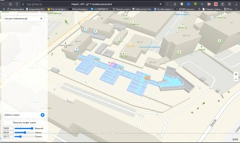
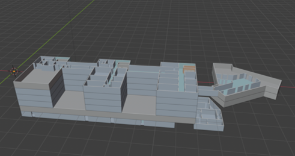

Цель проекта
Создание высококачественной 3D-модели зданий Московского Политеха для интеграции в платформу 2ГИС, чтобы повысить удобство навигации и привлечь внимание к университету.
Задачи проекта
- Сбор и анализ всей необходимой информации для создания точных и детализированных 3D-моделей.
- Разработка чёткой концепции будущего продукта: выбор ключевых объектов и элементов, подлежащих моделированию, а также определение стилистического подхода.
- Создание детализированной 3D-модели каждого здания Московского Политеха.
- Интеграция созданных моделей в платформу 2ГИС для обеспечения доступности пользователям.
Структура работы в проекте
- 1. Исследование и сбор данных: Сбор необходимых материалов, фотографий, чертежей и другой документации для точного моделирования зданий.
- 2. Моделирование: Использование специализированных программ для создания высокоточных 3D-моделей всех зданий Московского Политеха.
- 3. Тестирование и оптимизация: Проверка качества моделей, устранение ошибок и оптимизация для работы в платформе 2ГИС.
- 4. Интеграция: Передача готовых моделей партнёрам для размещения на платформе 2ГИС.
- 5. Обратная связь и корректировки: Анализ отзывов и внесение необходимых изменений в модели.
Пример 3D-модели корпуса

